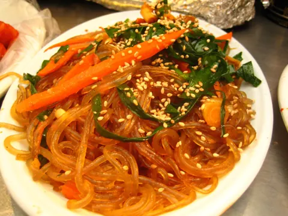
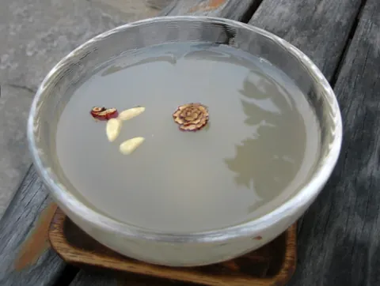
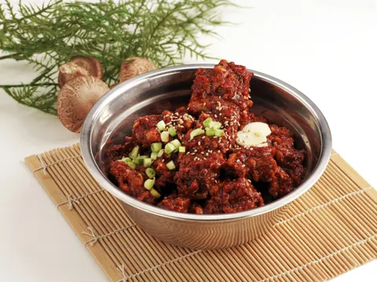
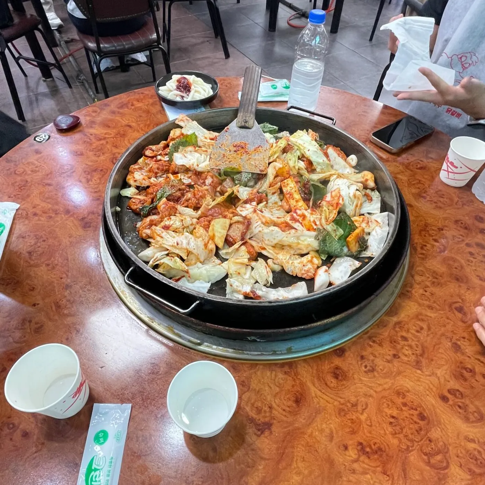
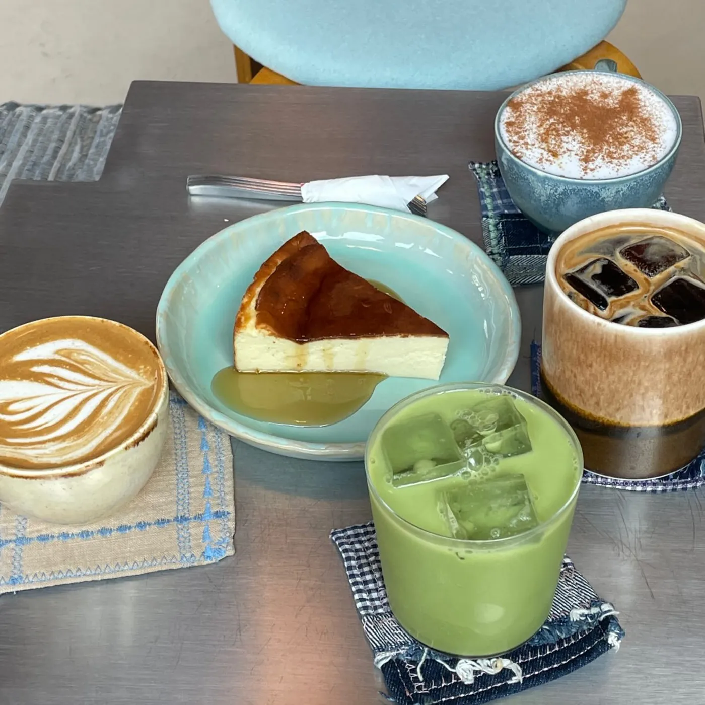
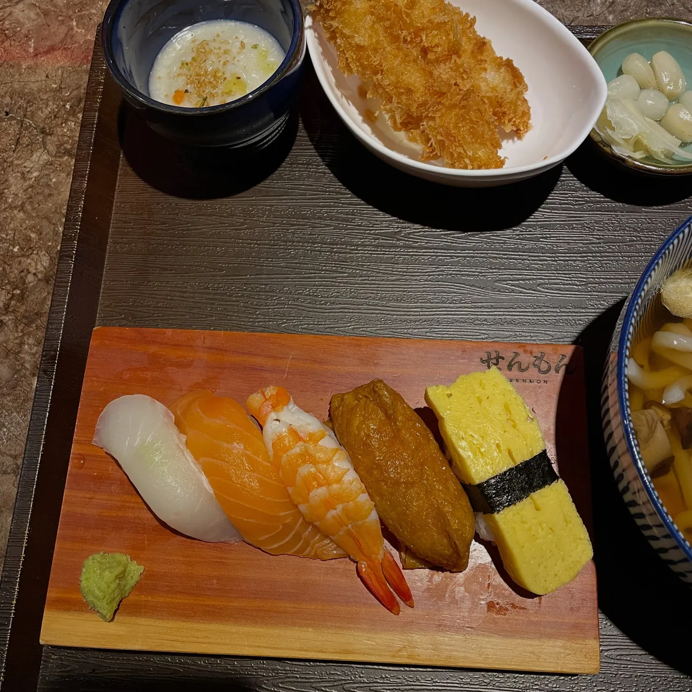

Recettes coréennes
Bibimbap, tteokbokki, kimchi jjigae : la cuisine coréenne pas à pas, en français, avec des ingrédients qu'on trouve en France.
Chercher une recette
Recherches fréquentes :tteokbokkikimchibibimbaptofunouilles froidesvégétarien30 min
- 247recettes
- 9catégories
- 200en version végétarienne
- 182en version vegan
- 10ingrédients expliqués
Parcourir
 Riz26 recettes
Riz26 recettes
Nouilles20 recettes Ragoûts et soupes42 recettes
Ragoûts et soupes42 recettes Viandes et poissons25 recettes
Viandes et poissons25 recettes Street food26 recettes
Street food26 recettes Galettes et fritures23 recettes
Galettes et fritures23 recettes Banchan52 recettes
Banchan52 recettes Desserts et douceurs24 recettes
Desserts et douceurs24 recettes
Boissons et thés9 recettes- VégéRecettes végétariennes200 recettes
- VeganRecettes vegan182 recettes
- 30 minRecettes rapides102 recettes
Par ingrédient
Tu as un ingrédient sous la main ? Trouve ce que tu peux en faire.
Selon le moment
La saison, l'occasion, le temps que tu as.


Par région
Chaque ville coréenne a son plat. Fais le tour du pays, de Séoul à l'île de Jeju.


 SéoulSéoul, Dongdaemun, GwangjangSeolleongtang, Bindaetteok, Mayak gimbap…8 recettes
SéoulSéoul, Dongdaemun, GwangjangSeolleongtang, Bindaetteok, Mayak gimbap…8 recettes

 Gyeonggi et IncheonIncheon, UijeongbuBudae jjigae, Jjajangmyeon, Jjolmyeon…4 recettes
Gyeonggi et IncheonIncheon, UijeongbuBudae jjigae, Jjajangmyeon, Jjolmyeon…4 recettes

 GangwonChuncheon, Sokcho, GangneungDakgalbi, Gamjajeon, Makguksu…8 recettes
GangwonChuncheon, Sokcho, GangneungDakgalbi, Gamjajeon, Makguksu…8 recettes
 ChungcheongDaejeon, CheonanKalguksu, Dotori mukbap, Hodu-gwaja…3 recettes
ChungcheongDaejeon, CheonanKalguksu, Dotori mukbap, Hodu-gwaja…3 recettes
 JeollaJeonju, Gwangju, YeosuBibimbap, Tteok-galbi, Kongnamul gukbap…6 recettes
JeollaJeonju, Gwangju, YeosuBibimbap, Tteok-galbi, Kongnamul gukbap…6 recettes
 GyeongsangBusan, Andong, Daegu, TongyeongAndong jjimdak, Godeungeo-gui, Chungmu gimbap…17 recettes
GyeongsangBusan, Andong, Daegu, TongyeongAndong jjimdak, Godeungeo-gui, Chungmu gimbap…17 recettes

 JejuÎle de JejuJeonbok-juk, Galchi jorim, Gogi-guksu…6 recettes
JejuÎle de JejuJeonbok-juk, Galchi jorim, Gogi-guksu…6 recettes Corée du NordPyongyang, Hamhung, KaesongBibim naengmyeon, Mul naengmyeon, Juak…4 recettes
Corée du NordPyongyang, Hamhung, KaesongBibim naengmyeon, Mul naengmyeon, Juak…4 recettes
Pour bien commencer
Trois recettes faciles, sans ingrédient compliqué, pour une première fois.


Le kimchi, fait maison
Bien sûr qu'on peut le faire soi-même. Deux recettes, selon le temps que tu as.

Nouveautés
Voir les 247 recettes-
 Kkwabaegi2 h
꽈배기
Des beignets briochés torsadés, frits et roulés dans le sucre à la cannelle. Moelleux, légers, et vendus par sacs entiers dans les marchés.
Version végétarienne : La recette est déjà végétarienne.Version vegan : Lait végétal et margarine, sans œuf.
Kkwabaegi2 h
꽈배기
Des beignets briochés torsadés, frits et roulés dans le sucre à la cannelle. Moelleux, légers, et vendus par sacs entiers dans les marchés.
Version végétarienne : La recette est déjà végétarienne.Version vegan : Lait végétal et margarine, sans œuf.
-
 Egg drop sandwich20 min
에그드랍 샌드위치
Un pain brioché grillé au beurre à l'ail, garni de jambon, de fromage et d'œufs brouillés très crémeux, avec deux sauces. Le petit-déjeuner à emporter de Séoul.
Version végétarienne : Sans jambon.
Egg drop sandwich20 min
에그드랍 샌드위치
Un pain brioché grillé au beurre à l'ail, garni de jambon, de fromage et d'œufs brouillés très crémeux, avec deux sauces. Le petit-déjeuner à emporter de Séoul.
Version végétarienne : Sans jambon.
-
 Daechu-cha1 h 20
대추차
Une infusion de jujubes séchées et de racine de campanule, mijotée une heure et adoucie au sucre roux. Le réconfort des soirs d'hiver.
Version végétarienne : La recette est déjà végétarienne.Version vegan : La recette est déjà vegan.
Daechu-cha1 h 20
대추차
Une infusion de jujubes séchées et de racine de campanule, mijotée une heure et adoucie au sucre roux. Le réconfort des soirs d'hiver.
Version végétarienne : La recette est déjà végétarienne.Version vegan : La recette est déjà vegan.
-
 Baesuk1 h 15
배숙
Une poire nashi évidée, garnie de miel, de jujubes et de gingembre, cuite une heure à la vapeur. Le remède doux contre la toux.
Version végétarienne : La recette est déjà végétarienne.Version vegan : Sirop d'agave à la place du miel.
Baesuk1 h 15
배숙
Une poire nashi évidée, garnie de miel, de jujubes et de gingembre, cuite une heure à la vapeur. Le remède doux contre la toux.
Version végétarienne : La recette est déjà végétarienne.Version vegan : Sirop d'agave à la place du miel.
-
 Omegi-tteok45 min
오메기떡
De petites boules de millet gluant et d'armoise, roulées dans la pâte de haricots rouges. Le gâteau de riz traditionnel de l'île de Jeju.
Version végétarienne : La recette est déjà végétarienne.Version vegan : La recette est déjà vegan.
Omegi-tteok45 min
오메기떡
De petites boules de millet gluant et d'armoise, roulées dans la pâte de haricots rouges. Le gâteau de riz traditionnel de l'île de Jeju.
Version végétarienne : La recette est déjà végétarienne.Version vegan : La recette est déjà vegan.
-
Suwon galbi4 h 45
수원갈비
De grandes côtes de bœuf ouvertes en ruban, marinées au sel plutôt qu'à la sauce soja, puis grillées. Le goût franc de la viande, à peine sucré.
-

Jjimgalbi de Daegu2 h 50 동인동 찜갈비 Des côtes de bœuf cuites longuement puis braisées avec des pommes de terre et du radis dans une sauce très pimentée et très aillée. La spécialité de Daegu. -
 Gondeure-bap4 h 30
곤드레밥
Du riz cuit avec une herbe sauvage des montagnes, le gondeure, parfumé à l'huile de sésame, servi avec une sauce à l'ail sauvage.
Version végétarienne : La recette est déjà végétarienne.Version vegan : La recette est déjà vegan.
Gondeure-bap4 h 30
곤드레밥
Du riz cuit avec une herbe sauvage des montagnes, le gondeure, parfumé à l'huile de sésame, servi avec une sauce à l'ail sauvage.
Version végétarienne : La recette est déjà végétarienne.Version vegan : La recette est déjà vegan.
Le blog EatwithStelva
Les tables où j'ai mangé, en Corée et ailleurs. Et comment refaire leurs plats chez toi.

Chuncheon · septembre 2026 Le dakgalbi de Chuncheon, cuit à table Le plat qui a fait la réputation de Chuncheon, mangé dans sa ville, avec le makguksu en prime.
Séoul · septembre 2026 Une pause café à Seochon Un de ces petits cafés qu'on trouve en flânant dans les ruelles de Seochon.
Séoul · septembre 2026 Une pause sushi à Séoul Le déjeuner du midi à Jangchung-dong : nigiri, udon et une anguille inoubliable.
Comment sont faites les recettes
Chaque recette s'adapte à ta tablée  , explique les ingrédients inconnus et propose une version sans viande .
, explique les ingrédients inconnus et propose une version sans viande .
Ajoute une personne et les quantités se recalculent toutes seules. Essayer sur le bibimbap
Le garde-manger
- 고추장Gochujang
- 고춧가루Gochugaru
- 된장Doenjang
- 참기름Huile de sésame grillé
- 떡Tteok
- 당면Dangmyeon
- 김Gim
- 단무지Danmuji
- 어묵Eomuk
- 김치Kimchi
Où trouver chaque ingrédient en France, et par quoi le remplacer
Questions de cuisine
Où acheter les ingrédients coréens en France ?
Dans les supermarchés asiatiques, au rayon coréen, et dans les épiceries coréennes des grandes villes. En ligne, Joybuy propose un grand choix de produits coréens (gochujang, kimchi, nouilles) et Waso livre des produits asiatiques frais et surgelés, dont de la viande finement tranchée, pratique pour le bulgogi ou le samgyeopsal. Le gochujang, l'huile de sésame et la sauce soja se trouvent aussi de plus en plus en supermarché.
Le gochujang, c'est très piquant ?
Moins qu'on ne le croit : il est d'abord sucré et profond. Beaucoup de pots indiquent le niveau de piquant, du plus doux au plus fort. Si tu crains le piment, commence par la moitié de la dose et goûte.
Quel riz prendre pour la cuisine coréenne ?
Un riz rond, celui qu'on utilise pour les sushis : il colle un peu et se tient aux baguettes. Pour changer, ajoute-lui une poignée de riz noir, qu'on trouve en supermarché : c'est le heukmi-bap, le riz violet qu'on sert dans beaucoup de foyers coréens. Le riz basmati ou thaï ne convient pas, ses grains restent séparés.
Peut-on cuisiner coréen sans viande ?
Oui, beaucoup de plats ont une version végétarienne. Fais attention aux bouillons d'anchois et à la sauce de poisson, qu'on trouve aussi dans certains kimchis. Chaque recette du site donne sa variante sans viande.
Peut-on faire son kimchi soi-même ?
Bien sûr ! Le kimchi express (geotjeori) se prépare en moins d'une heure et se mange le jour même. Le kimchi traditionnel, en quartiers de chou entiers, demande une journée et quelques semaines de patience. Les deux recettes sont sur le site. Pour les ragoûts, prends-le bien fermenté, quand il est devenu acide : c'est lui qui donne le goût.
Combien de temps se gardent ces ingrédients ?
Une fois ouverts, le gochujang et le doenjang se gardent plusieurs mois au frigo. Le gochugaru se garde mieux au congélateur, où il reste rouge et parfumé. Les tteok se congèlent très bien.